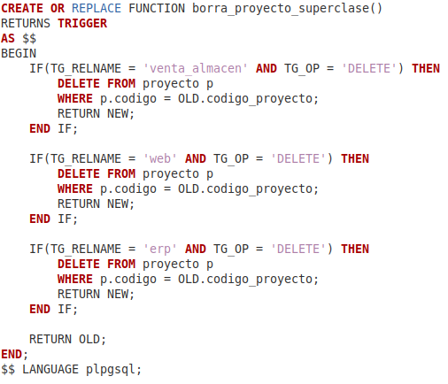
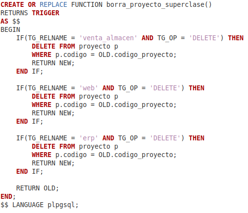

DÍA: LUNES
La primera función a realizar fue bastante sencilla: Consistía en validar si un DUI dado
cumplía con las reglas del algoritmo de la función. Si era válido retorna "true", sino, retorna "false".
Por lo que respecta a la historia que crearon en el juego...EL primer video que presentaron
me reí demasiado, nunca pensé que hicieran algo tan vergonzoso.
El segundo ejercicio trataba sobre como no puede haber un empleado representando a un departamento
cuando este no pertenece a al departamento que representa.
Una función bastante sencilla también para empezar a calentar, ya que los demás ejercicios fueron
un poco más complejos.
El tercer ejercicio era crear un trigger que se encargara de verificar que si se insertaba un
nuevo miembro en la tabla "miembro" entonces debía de existir en alguna de las subclases.
Esté ejercicio estaba un poco mejor explicado y no fue tan difícil de entender que es lo que me
estaban pidiendo. Con respecto a toda la dinámica de Ale Rav, solo esperaba que mandasen los QR.
El último día de ejercicios fue el más complicado porque eran tres y el problema es que si no
no habías hecho bien los triggers pasados podía ser que se disparan donde no debían debido a estos nuevos
triggers.
De hecho, tenía dos triggers malos porque se disparaban con otros y estaban malos debido a que
no tenía mucho conocimiento de la dinámica de la BD.
El quinto día fue la gran revelación, a la cual no fui porque ni siquiera leía los
textos que iban enviando. Sin embargo, en clase mostraron el video de que fue lo que paso:
Un montón de gente tomándose selfies con el tipo que había fingido su muerte hasta que
se aburrieron y se pusieron a buscar no sé que en los celulares, fue muy incómodo y gracioso
(como toda la dinámica, fue incómoda pero me reía y eso es lo que cuenta).
 
